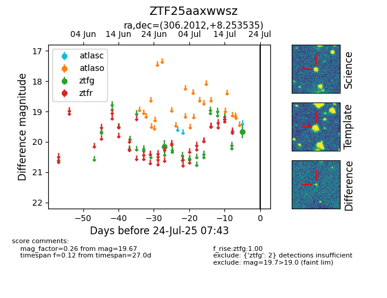

Target ZTF25aaxwwsz at 2025-07-23 11:52, see:
FINK: fink-portal.org/ZTF25aaxwwsz
Lasair: lasair-ztf.lsst.ac.uk/objects/ZTF25aaxwwsz
ALeRCE: alerce.online/object/ZTF25aaxwwsz
alt names
ZTF25aaxwwsz (ztf,fink)
coordinates:
equatorial (ra, dec) = (306.2012,+8.25354)
galactic (l, b) = (51.5751,-16.47013)
photometry
last ztfg=19.67
2 ztfg detections
